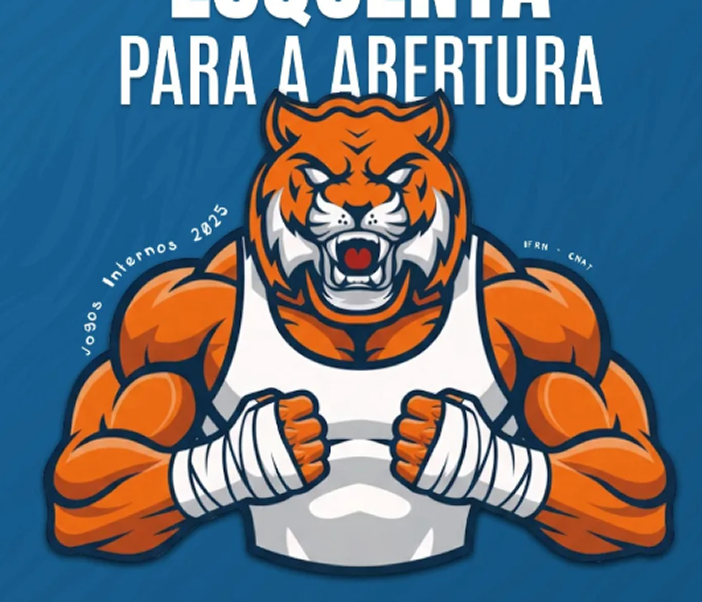
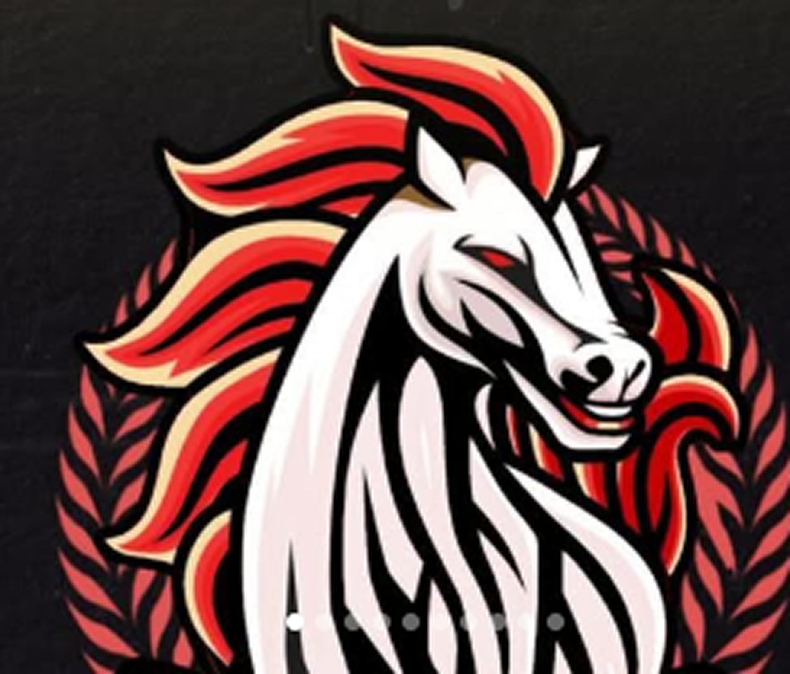
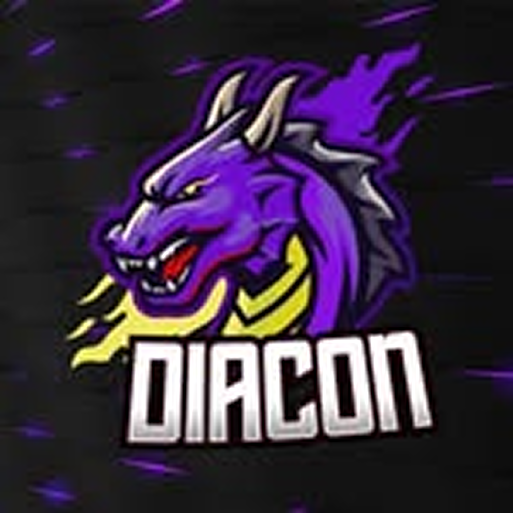
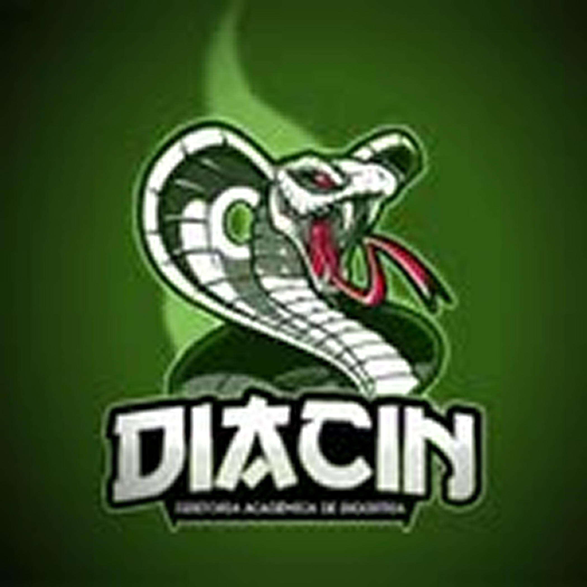

DIATINF
Diretoria focada em tecnologia, inovação e integração digital para apoiar a organização do evento.

DIATINF • Tigre
Diretoria focada em tecnologia, inovação e integração digital para apoiar a organização do evento.

Diretoria voltada à articulação de equipes e suporte operacional para uma abertura dinâmica e eficiente.

Diretoria responsável pela coordenação estratégica e comunicação institucional entre os participantes.

Diretoria dedicada ao acompanhamento das equipes e fortalecimento da integração no projeto.

O SCRIPTA é uma plataforma desenvolvida para organizar a abertura dos jogos internos do IFRN, permitindo o cadastro de líderes e sublíderes das diretorias, promovendo integração, gestão eficiente e acompanhamento das equipes envolvidas no evento.
0
Pessoas engajadas no projeto